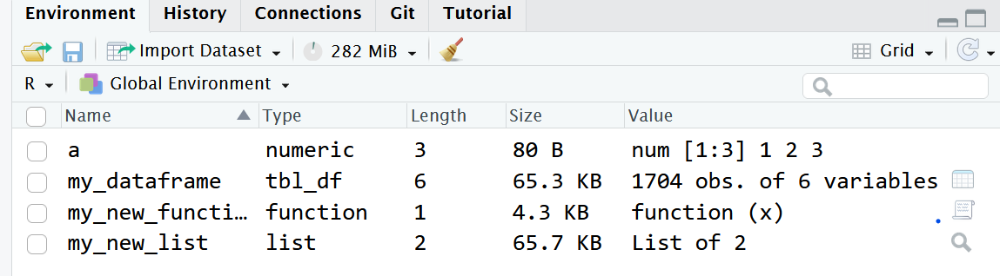

| country | LifeExpectancy |
|---|---|
| Iceland | 81.757 |
| Switzerland | 81.701 |
| Spain | 80.941 |
| Sweden | 80.884 |
| France | 80.657 |
2025-07-24
| country | LifeExpectancy |
|---|---|
| Iceland | 81.757 |
| Switzerland | 81.701 |
| Spain | 80.941 |
| Sweden | 80.884 |
| France | 80.657 |
| country | year | LifeExpectancy |
|---|---|---|
| Albania | 2007 | 76.423 |
| Albania | 2002 | 75.651 |
| Albania | 1997 | 72.950 |
| Denmark | 2007 | 78.332 |
| Denmark | 2002 | 77.180 |
| Denmark | 1997 | 76.110 |
| country | AverageLifeExpectancy |
|---|---|
| Albania | 75.00800 |
| Denmark | 77.20733 |
Data Structures in R
R data types: characters, numbers, TRUE/FALSE (aka logical/Boolean)
object \(\approx\) anything you enter to the computer without an error message coming
The resulting object vanished as soon as it appeared on the screen.
variable \(\approx\) a labeled box in computer memory to store an object
Nothing appeared, but the object exists in the variable.
variable names must not
start with a digit
contain any characters but ASCII letters, numbers, and _ (underscore)
coincide with a few reserved words in R (e.g. for or in)

create a different variable for each step in your script
overwrite the variable
Functions \(\approx\) verbs
“argument structure”/“valency”
obligatory vs. free vs. unacceptable (no slot)
collocability
argument does not fit
argument causes a meaning shift
HelpHelp - functions to replace strings
additional functions and data sets
first install (Packages tab)
load when you need a function from there
library(thelibrary) without quoteswhen functions from different packages happen to have the same name
R warns when it finds such a pair across your loaded libraries.
Use these functions with package name like this: library::function()
c() function to concatenate / combine values to a vectorchartr cannot do a vector of replacements:Warning in chartr(old = c("a", "b"), new = c("A", "B"), x = "banana"): argument
'old' has length > 1 and only the first element will be usedWarning in chartr(old = c("a", "b"), new = c("A", "B"), x = "banana"): argument
'new' has length > 1 and only the first element will be used[1] "bAnAnA"Put each command on one line.
When you enclose an assignment statement in parentheses, the variable will print out.
What you see in the second chunk is called class coercion.
0 and 1select elements of a vector
by their position
by some condition
many functions proceed element by element
nothing gets recycled with equally long vectors
The second vector contains just one value and that must serve each element of the first vector
2 gets recycled
the second vector gets recycled once
each of its element must serve twice
R believes you want it this way
1: Variables = columns (two), observations = rows
2: Qualitative/categorical variables are always discrete: When the values are names of countries like in the example, you cannot have a value that would lie, e.g., between Denmark and Sri Lanka. Life expectancy is a quantitative value and it is continuous. When you see neighboring values, it is very well possible that another country’s life expectancy would still lie between. When you disregard rounding, you could see extremely tiny differences, for instance five seconds or so… On the other hand, year is usually interpreted as a discrete variable, although time is unarguably a continuous concept.